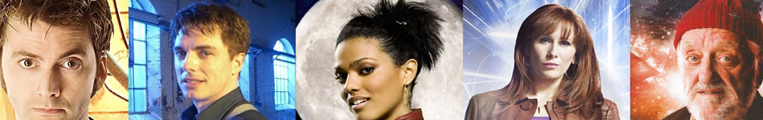

| Home | The Doctors | The Companions | The Villans |
|  | |||
|
Susan ForemanSusan Foreman is a fictional character in the British science fiction television series Doctor Who. The granddaughter and original companion of the First Doctor, she was played by actress Carole Ann Ford from 1963 to 1964, in the show's first season and the first two stories of the second season. Ford reprised the role for the feature-length 20th anniversary episode The Five Doctors (1983) and the 30th anniversary charity special Dimensions in Time (1993). Susan appeared in 10 stories (51 episodes). |